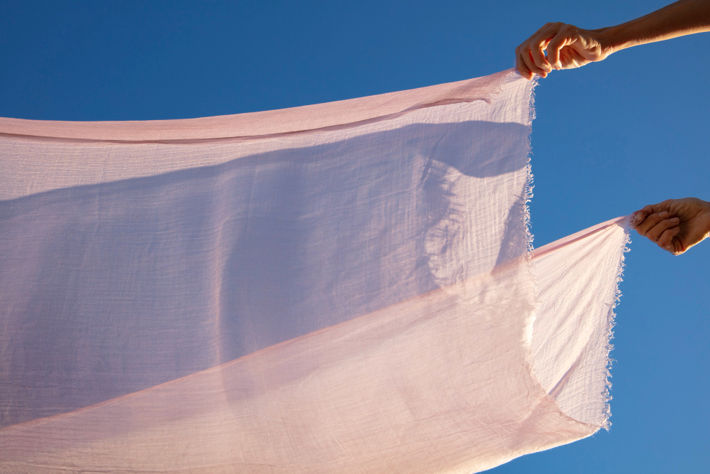

자연에서 온 혁신, 소로나(Sorona®)
옥수수 추출 성분 기반의 지속 가능한 친환경 고기능성 섬유입니다.
피부에 닿는 부드러운 감촉과 뛰어난 신축성, 그리고 완벽한 회복력을 선사합니다.

탁월한 신축성과 회복력
스판덱스를 사용하지 않아도 자연스러운 스트레치를 제공하며, 반복적인 착용과 세탁 후에도 훌륭한 형태 복원력을 유지합니다.
부드러운 터치감
고급스러운 실크처럼 부드러운 텍스처를 자랑하여, 운동 중에도 피부에 자극 없이 쾌적한 피팅감을 선사합니다.
친환경 소재
화석 연료 대신 식물성 원료를 37% 사용하여 제조 과정에서 온실가스 배출을 크게 줄인 지속 가능한 친환경 섬유입니다.